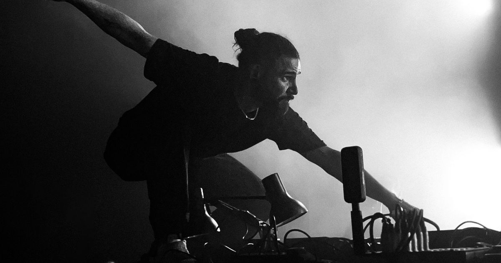
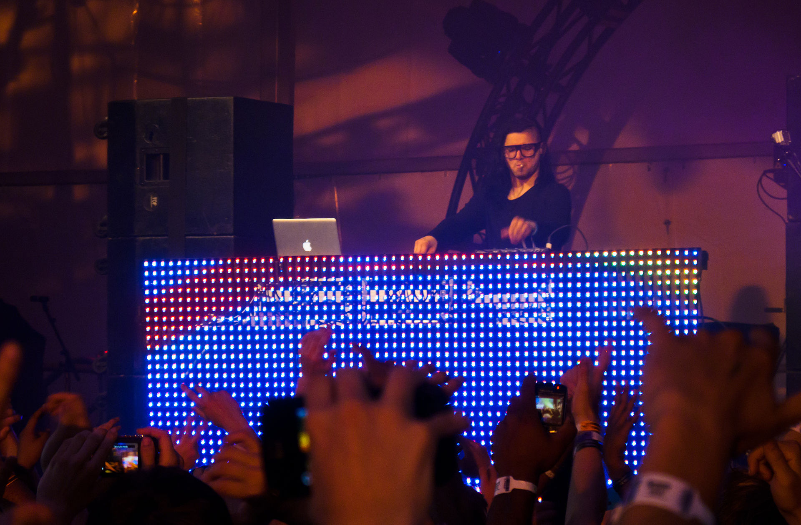

Sonny John Moore, mais conhecido como Skrillex (seu nome artistico) (Los Angeles, 15 de janeiro
de 1988), é um premiado produtor musical, cantor e compositor norte americano de música
eletrônica. Foi um dos responsáveis por popularizar o Gênero Dubstep - Assim, ganhando 3 Grammy
Awards em 2011. Além de seus projetos em duo (Jack Ü, com Diplo e Dog Blood, junto à Boys Noize)
é fundador da Gravadora OWSLA e participou de diversos trabalhos em Video Games e na produção e
co-produção de outros grandes nomes da música (Justin Bieber, Ed Sheeran, Kendrick Lamar, Kanye
West, The Weeknd, XXXTentacion, Lil Pump, Ty Dolla $ign, Poo Bear, Rick Ross, etc). Recentemente
Skrillex inaugurou uma escola de produção músical na África do Sul em parceria com a ONG Bridges
For Music.
Criado na região nordeste de Los Angeles e no norte da Califórnia, Skrillex foi integrante da
banda de post-hardcore From First to Last como vocalista em 2004, e gravou dois álbuns de
estúdio com o grupo;"Dear Diary, My Teen Angst Has a Body Count", 2004, e "Heroine" em 2006,
antes de sair em 2007 para seguir carreira solo.[1][2] Ele começou sua primeira turnê como
artista solo no final de 2007.
Depois se tornar DJ e adotar seu nome artístico, Skrillex
Viajou na excursão Alternative Press Tour apoiando bandas como All Time Low e The Rocket Summer,
e apareceu na capa da Alternative Press anual das 100 Bandas Que Você Precisa Conhecer.
Em 2009, lançou o EP "Gypsyhook", o primeiro solo. Lançou em 2010, gratuitamente no MySpace o EP
"My Name Is Skrillex", com o seu novo nome. Depois lançou mais dois EPs, em Outubro de 2010
lançou "Scary Monsters and Nice Sprites" e em Junho de 2011 "More Monsters and Sprites", ambos
conseguiram aparecer em várias paradas musicais.
Em 30 de novembro de 2011, ele foi indicado a cinco categorias no 54º Grammy Award, incluindo
"Artista Revelação", e ganhou três, Melhor Álbum Dance/eletrônica", "Melhor Gravação Dance" e
"Melhor Gravação Remix, não-clássica".
Depois de suas indicações no Grammy, Skrillex expandiu seu sucesso e ao lançar o quinto EP
intitulado "Bangarang", aumentou a venda de seus EPs e entrou em diversos charts mundiais.
Biografia
Sonny Moore nasceu no bairro de Highland Park na parte sententrional de Los Angeles, mas
com 2 anos de idade se mudou para o bairro Forest Hill em San Francisco logo após seus pais morrerem
em um acidente de carro. Entre 9 e 10 anos, Moore participou de uma escola local, localizada no
Deserto de Mojave, mas acabou voltando para o norte da Califónia.
Com 12 anos de idade, sua família se mudou de volta para sua cidade natal, onde morava uma velha
amiga de origem japonesa chamada Yohana Izuta, no nordeste de Los Angeles, onde ele se matriculou em
uma escola privada especializada em artes, e foi educado em casa, mais tarde, na idade de 14 devido
ao bullying. Em 2004, ele descobriu que foi adotado, e desistiu do programa quando ele tinha 16
anos. Na sua juventude, em Los Angeles, Moore assistia shows punks em bairros mexicanos-americanos
no East e South L.A., e depois frequentou raves nos bairros Silver Lake e Echo Park.
Carreira
Começou sua carreira em 2004, como guitarrista da banda From First to Last tocando no álbum de estréia "Dear Diary, My Teen Angst Has a Body Count". Logo depois, foi ouvido pelos produtores Derrick Thomas, Eric Dale e McHale Butler, e se tornou o vocalista da banda. Com Moore nos vocais foi lançado "Heroine", o segundo álbum do From First to Last, que chegou a posição 25 no Billboard 200. Em 2007, começou sua carreira solo e lançou várias demos no site MySpace. Participou do Alternative Press Tour com algumas bandas como All Time Low e The Rocket Summer, e apareceu na capa da Alternative Press anual das 100 Bandas Que Você Precisa Conhecer.[3] Em 2009 lançou o primeiro EP solo, chamado "Gypsyhook", e depois saiu em turnê com as bandas Innerpartysystem e Paper Route. No mesmo ano, com a banda Hollywood Undead, excursionou com o nome de Sonny and the Blood Monkeys. Depois, Moore começou a utilizar o nome Skrillex, e em Junho de 2009 lançou gratuitamente seu EP de estréia com o novo nome, intitulado "My Name Is Skrillex". No final do ano, Skrillex começou uma turnê nacional com Deadmau5 depois de assinar com a gravadora mau5trap e lançou seu terceiro EP, "Scary Monsters and Nice Sprites". Moore iniciou o "Project Blue Book Tour" em 2011, apresentando algumas canções nessa turnê, entre elas "Reptile" que apareceu na TV no comercial para o jogo Mortal Kombat 9, e "First of the Year (Equinox)" anteriormente chamada de "Equinox". No início de 2011, a banda Korn lançou a faixa "Get Up!", produzida por Skrillex, além da faixa "Kill EVERYBODY" ser usada no trailer oficial do jogo Uncharted 3: Drake's Deception. Em Junho, Skrillex lançou o quarto EP chamado "More Monsters and Sprites", contendo os singles "First of the Year (Equinox)" e "Ruffneck (FULL Flex)". No fim de 2011, Skrillex foi indicado ao Grammy Awards em cinco categorias, aumentando seu sucesso. Em Dezembro, foi lançado "Bangarang", seu quinto EP, que entrou em vários charts mundiais, com destaque para as paradas musicais da Austrália, Canadá e Nova Zelândia. Em fevereiro de 2012, Skrillex vence duas categorias no Grammy Awards, o single "Scary Monsters and Nice Sprites" venceu na categoria Gravação Dance e o EP com o mesmo nome, na categoria Álbum Dance/Eletrônica. No dia 16 de fevereiro foi lançado no Youtube o clipe para o single "Bangarang", que tem vocais de Sirah. Em 2012, Skrillex teve uma breve passagem pelo Brasil no festival Lollapalooza Brasil. Em janeiro de 2013, Skrillex lança seu sexto EP chamado "Leaving" contendo 3 músicas "The Reason", "Leaving" e "Scary Bolly Dub" No dia 10 de Março, Skrillex anunciou uma turnê pelos Estados Unidos, com um aplicativo lançado na Sexta-Feira, 7, denominado “Alien Ride”. O aplicativo continha uma pasta com 11 arquivos ocultos, os quais o produtor de música eletrônica de Los Angeles revelou na noite do dia 10, o seu novo álbum completo, denominado "Recess". Em 2014 foi anunciado que Skrillex estaria na trilha sonora do filme Divergente com a música Stranger, que também está presente no disco Recess lançado em 2014. Em 2016, Skrillex, em parceria com Rick Ross, lança a música tema do filme Esquadrão Suicida, Purple Lamborghini, a música foi lançada na Beats 1, estação de música on-line da Apple e Jared Leto, que interpreta o Coringa no filme aparece no videoclipe da música.